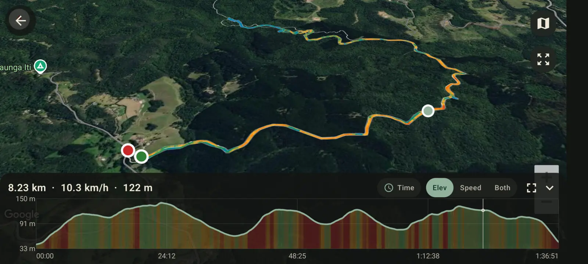
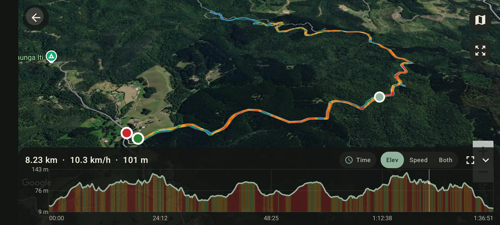

Höhenkorrektur
GPS-Höhendaten auf Android korrigieren
Diese Anleitung entstand aus einer echten Route, deren aufgezeichnete Höhe deutlich unruhiger war als die Route selbst. GPS Logger kann gespeicherte Tracks mit Geländedaten korrigieren, damit Höhenprofil und Höhengewinn realistischer werden.


Warum GPS-Höhe ungenau ist
Smartphones messen Position horizontal oft deutlich besser als vertikal. Satellitengeometrie, Wald, Gebäude, Wetter und Barometerdrift können die Höhe springen lassen. Weil Höhengewinn aufsummiert wird, erzeugen kleine Fehler über tausende Punkte schnell unrealistische Werte.
Was Geländekorrektur macht
Die Route, Zeitstempel und Punkte bleiben erhalten. GPS Logger lädt die benötigten öffentlichen Geländekacheln für das Routengebiet, ersetzt die fehlerhafte Höhe durch die Geländehöhe und berechnet Profil und Höhenmeter neu.
Wann sie nützlich ist
- Ein GPX-Track hat Spitzen oder abrupte Abstürze.
- Eine flache Pendelstrecke meldet zu viele Höhenmeter.
- Mehrere Aufzeichnungen derselben Route liefern sehr unterschiedliche Höhenwerte.
- Importierte GPX-Dateien enthalten fehlende oder schlechte Höhendaten.
Grenzen der Korrektur
Geländedaten beschreiben den Boden. Brücken, Hochstraßen, Gebäude, Tunnel, Fähren oder Flugzeuge kann die Korrektur nicht erkennen. Dort kann die ursprüngliche Sensorhöhe passender sein.
So geht es
- Route aufzeichnen oder GPX importieren.
- Track im Verlauf öffnen.
- Höhe korrigieren wählen. Dafür ist Internet nötig.
- Warten, bis Profil und Höhengewinn neu berechnet sind.
- Bei Bedarf als GPX oder KML exportieren.
Die App zeigt aktuelle Grenzen, bevor du startest. Stapelkorrektur ist nützlich, wenn du eine ganze gespeicherte Bibliothek statt einzelner Routen bereinigen möchtest.